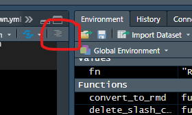

Chapter 8 Various topics
8.1 Mastering package dependencies
Besides having to write dependable code yourself (which might require some defensive programming, see Section @ref()), we also have to worry about dependencies of R packages, that is, code written by other R users.
First scan through the section on R Packages (1.10) to make sure you grasp all the fundamentals of R packages.
8.1.1 What version?
When an external package has changed on CRAN since you last used it, the version will have changed. You can inspect the version of a package with,
## [1] '0.8.3'In a script, you can make sure a package is loaded with at least some version:
## [1] TRUEWhich you can use like,
8.1.2 Avoiding conflicts
To make sure you use a function from the intended package, you can use the :: operator.
In this example, we avoid a common problem with select and other functions in packages with very general names.
When writing packages and other production-level code, the use of :: is strongly recommended. In practice in writing dependable scripts, I recommend using :: where practical, and less for functions that have obviously unique names in the context.
Finally, one way to avoid conflicts is to use as few packages as possible, as described in a later section.
8.1.3 The search path and conflicts
After you load a package with library(), it is added to the search path. This is an order of environments where R will look for the value of some object - often an R function.
Use search to inspect the current search path:
## [1] ".GlobalEnv" "package:knitr" "package:magrittr"
## [4] "package:tibble" "package:stats" "package:graphics"
## [7] "package:grDevices" "package:utils" "package:datasets"
## [10] "package:methods" "Autoloads" "package:base"When you type a function in R, like summary(), where will R find the definition of that function? In the search path above, it starts at first environment (where environments are packages, the global environment (what you see in the Environment pane in Rstudio), and some others). The search continues until a function is found with the name summary, and then R stops searching.
If you have conflicts, where the name of a function is defined in more than one package, the order in which you loaded the packages will affect from which package the function will actually be used. However, do not use this fact as a way to manage package dependencies, instead read the next section carefully.
To find the actual location of the package files on your system, use the following command (this might be helpful to archive all actual package files used in a project).
## [1] ".GlobalEnv"
## [2] "c:/RLIBRARY/knitr"
## [3] "c:/RLIBRARY/magrittr"
## [4] "c:/RLIBRARY/tibble"
## [5] "C:/Program Files/R/R-3.6.2/library/stats"
## [6] "C:/Program Files/R/R-3.6.2/library/graphics"
## [7] "C:/Program Files/R/R-3.6.2/library/grDevices"
## [8] "C:/Program Files/R/R-3.6.2/library/utils"
## [9] "C:/Program Files/R/R-3.6.2/library/datasets"
## [10] "C:/Program Files/R/R-3.6.2/library/methods"
## [11] "Autoloads"
## [12] "C:/PROGRA~1/R/R-36~1.2/library/base"8.1.4 All packages: loaded or installed
To list all loaded packages, do:
## [1] "knitr" "magrittr" "tibble" "stats" "graphics"
## [6] "grDevices" "utils" "datasets" "methods" "base"And to list all installed packages,
8.1.5 Bundling package dependencies with renv
If you want to be able to run your project a long time after you created it, one of the packages may have changed - causing an error or unexpected result. Although this is comparatively rare, it is still a possibility you want to avoid.
If we transport the script to another location, how can we be sure that the code will be working? Sometimes, newer versions of packages break old code, and in some cases packages are no longer hosted on CRAN after some time (though this is rare).
Another problem arises because all your R projects normally share the same library of R packages on your machine. That means that if you install a newer version in one project, it might cause code to stop working in another project.
The new renv package by Rstudio is at the time of writing the best solution to creating a project that is truly portable, since we can transport the packages alongside with the code.
In practice, we basically just run this command once in a new (or existing) project:
All package dependencies are downloaded and kept in a special renv subfolder (the original source code for all the packages).
After initializing renv in a directory, you can keep using install.packages and library as usual, the packages are now installed in your local renv folder, and in a global cache which renv manages for you.
If you are using, say package version 1.2, and version 1.3 is installed on your machine from a different project, the renv project will still use 1.2, unless we update this package locally ourselves (simply with install.packages).
8.1.6 Minimizing package dependencies
Although a solution like renv can help us to make scripts reproducable, in practice this rule of thumb is a valuable lesson:
Use as few external packages in your code as possible
Complicated projects tend to break easily, and often external R packages are to blame.
Don’t use packages when you only use one simple function from it. In that case, copy the function to your own code base, and
sourceit in a script.Try to use packages that are still in active development, have a significant user- (or fan-) base, such as the
tidyversepackages, and are popular.
These warnings should not shy you away from exploring the great universe of >15000 R packages that are now publicly available, chances are some obscure analysis or method is already implemented.
8.2 A logical structure for your scripts
8.2.1 Write functions, not long scripts
If a script becomes too long, write more functions. Writing your own functions is the most important advise if you want to write and maintain robust, complex projects.
As pointed out in the Chapter on Project management (7), save these functions separately, for example “R/functions.R”, and source them with:
Unfortunately source is not vectorized, so to read all R scripts from a subdirectory you can simply do,
8.2.2 Divide your script into functional blocks
Dividing your scripts into a few functional blocks can help readability and reliability. With special formatting, you can even improve the table of contents (TOC) menu in Rstudio for a script. Run the example below, and then find the TOC button in Rstudio:

Access the (nearly) automatic TOC in Rstudio
In the following example script, note that we load all packages at the beginning of the script, so that when something goes wrong at that stage, we know before executing any of the ‘real’ code.
Also note the use of #-----, this helps to make the TOC as mentioned above.
# An example script
# 2020, Author
#----- Load packages -----
library(dplyr)
library(rvest)
library(stringr)
library(glue)
#----- Custom functions -----
source("R/functions.R")
source("R/database_functions.R")
#----- Configuration -----
# Load configuration (passwords etc., see next Section!)
.conf <- yaml::read_yaml(file = "config.yml")
#----- Database -----
# Make database connection
db_con <- make_database_connection_knmi(.conf)
# Download data
cloud_data <- download_cloud_data(con = db_con)
# Archive the data
fn <- glue("archive/out_{Sys.Date()}.rds")
try(saveRDS(cloud_data, fn), silent = TRUE)
#----- Visualization -----
# Make visuals
make_cloud_maps(data = cloud_data)
#----- Model -----
# Do some advanced modelling
model_run <- run_cloudy_model(data = cloud_data)
# Upload the model results to a remote database
upload_model_db16(model_run, config = .conf)The fictional script above is just an example how you can divide a master script into logical statements, using functions that perform all the underlying tasks.
One major advantage of the above approach is because functions execute their “inner workings” in a separate environment, which means that objects inside a function are not visible either outside the function (like the main script) or in any other script.
That way, executing the script above does not produce any objects in the environment (the memory) other than the ones returned by the functions. All the intermediate objects that were executed inside each function have disappeared, freeing memory and avoiding conflicts.
8.3 Pay attention to detail: write clean code
You may not want to spend the time making sure your code is neatly formatted, but it helps tremendously in a) spotting syntax errors while you write, and b) make your code vastly more readable by another person.
Unlike a language like Python, in R you are incredibly free to format your code (with spaces, tabs, newlines) pretty much however you want. Although this gives the programmer a lot of room for creative (and short) code, it can also be frustrating because it makes some code hard to read (when it is “poorly” formatted).
lintr : https://github.com/jimhester/lintr (I find it too restrictive and too opinionated, but you will certainly learn a lot by going through the process).